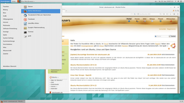

GNOME Classic
Dieser Artikel wurde für die folgenden Ubuntu-Versionen getestet:
Ubuntu 14.04 Trusty Tahr

GNOME Classic ist ein Modus der GNOME Shell  , der ab GNOME 3.8 zur Verfügung steht. Bei diesem Modus wird mit Hilfe von Erweiterungen das Erscheinungsbild der GNOME Shell so angepasst, dass es dem Design von GNOME 2.x ähnelt.
, der ab GNOME 3.8 zur Verfügung steht. Bei diesem Modus wird mit Hilfe von Erweiterungen das Erscheinungsbild der GNOME Shell so angepasst, dass es dem Design von GNOME 2.x ähnelt.
Hinweis:
Auch Ubuntu 12.04 enthielt einen "GNOME Classic" genannten Fallback-Modus, der mit dem hier beschriebenen außer dem Namen nichts gemein hat! Falls man den Nachfolger des GNOME3-Fallback-Modus sucht, dann ist man beim Artikel GNOME Flashback richtig.
Installation¶
GNOME Classic kann nicht einzeln installiert werden, sondern wird automatisch zusammen mit der GNOME Shell installiert. Das bedeutet auch, dass eine 3D-Unterstützung durch die Grafikkarte zwingend vorhanden sein muss.
Außerdem kann es erforderlich sein, das folgende Paket zu installieren:
gnome-shell-extensions (universe)
 mit apturl
mit apturl
Paketliste zum Kopieren:
sudo apt-get install gnome-shell-extensions
sudo aptitude install gnome-shell-extensions
Bedienung¶
|  |
| GNOME Classic unter Ubuntu 14.04 |
Während der Anmeldung kann man in den GNOME Classic Modus wechseln, indem man bei der Sitzungsauswahl "GNOME Classic" auswählt. In Vergleich zur GNOME Shell versucht GNOME Classic, mit Hilfe von Erweiterungen das Aussehen der GNOME Shell an das Erscheinungsbild von GNOME 2.x anzunähern.
Unterschiede zur GNOME Shell¶
Der Hauptunterschied von GNOME Classic ist, dass dieser Modus wieder zwei Panels besitzt. Das obere Panel enthält folgende Elemente:
Links:
"Anwendungen"-Menü (Verwendete Erweiterung: Applications Menu
) "Orte"-Menü (Verwendete Erweiterung: Place Status Indicator
)
Rechts:
der Benachrichtigungsbereich (Tray)
den Tag und die Uhrzeit (ein Klick öffnet einen Kalender)
das Status-Menü
Das untere Panel enthält folgende Elemente:
"Fensterliste" - dort werden die aktuell geöffneten Fenster angezeigt (Verwendete Erweiterung: Window List
)"Arbeitsflächenanzeiger" - ermöglicht das Wechseln der Arbeitsflächen
Zusätzlich sind noch zwei weitere Erweiterungen standardmäßig aktiviert:
Launch New Instance
- Lässt bei jedem Klick auf einen Anwendungsstarte eine neue Instanz des Programms starten, statt die aktuelle Instanz in den Vordergrund zu holen.AlternateTab
- Erweitert den Fensterwechsler um ein Bild des Programmfensters.
Die weitere Bedienung ist mit der Bedienung der GNOME Shell identisch.
 Übersichtsartikel
Übersichtsartikel- Erstellt mit Inyoka
-
 2004 – 2017 ubuntuusers.de • Einige Rechte vorbehalten
2004 – 2017 ubuntuusers.de • Einige Rechte vorbehalten
Lizenz • Kontakt • Datenschutz • Impressum • Serverstatus -
Serverhousing gespendet von